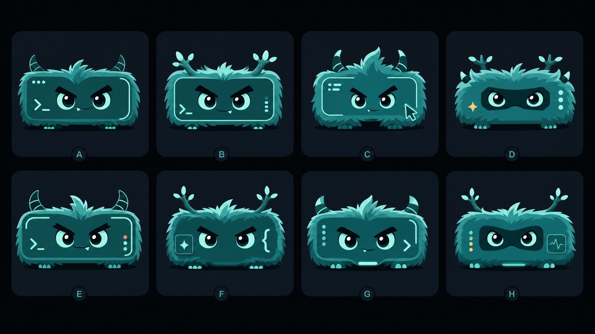
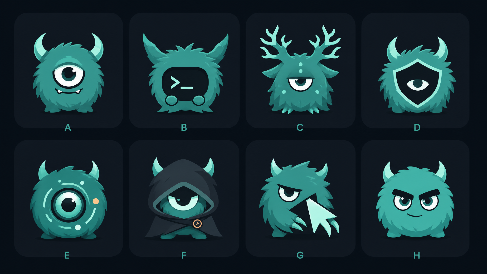
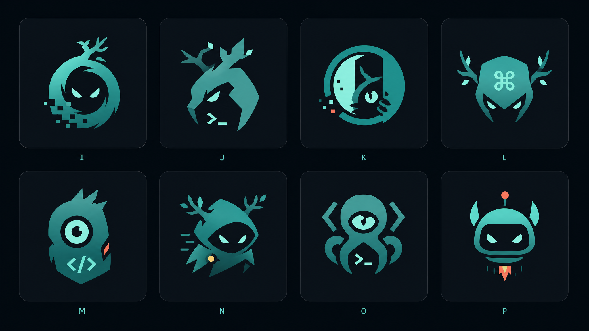

Wide board-monster focus
Landscape / board-card-shaped monster marks. Strongest first-pass picks: A, C, E, G.

Agor mascot/logo exploration
File-backed raster concept sheets generated with the OpenAI Images API using the Agor teal/ink palette. The wide board-monster sheet is the current lead direction. Visual ideation only — no production logo replacement yet.
Landscape / board-card-shaped monster marks. Strongest first-pass picks: A, C, E, G.

Friendlier, logo-ready creature directions. Strongest first-pass picks: A, B, D, G.

More distinctive tech/product silhouettes. Strongest first-pass picks: I, J, L, O.
